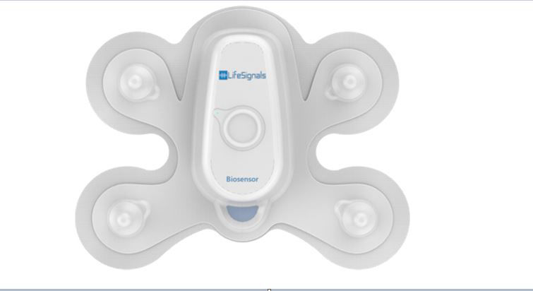
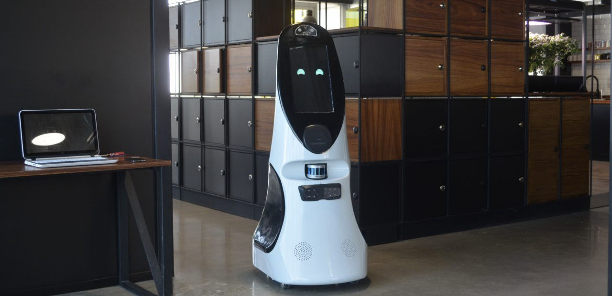

Captura de pantalla de la aplicación Medly. Fuente: Medly

Biosensor Patch 1AX. Fuente: Lifesignals

Lista de requerimientos y estado del arte
Queremos que nuestra propuesta a desarrollar pueda monitorear señales del paciente, pues consideramos que a partir de esto podría darse un monitoreo efectivo. A partir de esta idea, desarrollamos nuestro estado del arte y requerimientos.
Idealmente, consideramos que las siguientes condiciones son necesarias para nuestro concepto de solución:
Instrumento médico común que se usa para monitorear de manera no invasiva la saturación de oxígeno arterial (SpO2) de una persona. El oxímetro de pulso de tipo dedo es el principal en el mercado actualmente. Sin embargo, es inconveniente para el monitoreo a largo plazo por su posible margen de error debido al movimiento involuntario del dedo durante la medición. [1]
Ventaja: Medición rápida del paciente.
Desventaja: Requiere que el paciente esté completamente quieto durante la medición, lo que puede llevar a errores de no cumplirse.
En las últimas décadas se discutió el diseño óptimo de un oxímetro de pulso, ya que el movimiento durante la medición era un inconveniente. Se discutió la eficiencia de los oxímetros de pulso de tipo anillo con un solo detector y un detector múltiple [2] y resultó proporcionar la mejor eficiencia para medir la SPO2, no obstante, su costo es considerablemente mayor a otros oxímetros.
Ventaja: Menos riesgo de error de medición que el oxímetro de pulso tipo dedo.
Desventaja: Precio significativamente mayor que el oxímetro de pulso tipo dedo.
Este es un oxímetro de muñeca, que además puede detectar el radio respiratorio, temperatura de la piel, movimiento y patrones de sueño de quien lo usa. El dispositivo es preciso y exacto, como se pudo ver en un estudio donde se midió y cómparo con otros similares. A partir de este resultó una tasa de precisión de 2,28472% para las mediciones de SpO2 y el pulso durante las actividades diarias de pacientes con Enfermedad Pulmonar Obstructiva Crónica [4], y no es inferior a los dispositivos estándar para el control puntual o los exámenes de corta duración. Su diseño de sensor de muñeca es cómodo y proporciona la ventaja del uso extendido.
Ventaja: Los datos medidos se pueden almacenar via aplicación de celular, mostrándolos a manera de historial.
Desventaja: No se encuentra disponible en el país.
La existencia de wearables inteligentes antes de la crisis del coronavirus es una realidad. En el siguiente cuadro se mencionan algunos dispositivos y los parámetros que pueden medir. [5] En la siguiente tabla se ve la variedad de modelos disponibles, así como su costo y los parámetros que pueden medir.
Este es un software gratuito que permite a los pacientes y a los médicos monitorear el estado de la enfermedad de insuficiencia cardiaca (IC) del paciente. Se ha demostrado que el uso de Medly reduce la IC y las hospitalizaciones por cualquier causa con una mejora en la calidad de vida relacionada con la IC. Este programa utiliza una aplicación de teléfono móvil, una báscula y un brazalete de presión sanguínea para controlar el peso, los signos vitales y los síntomas del paciente. [6] A su vez, ofrece data en tiempo real y relevante para los médicos que lo utilizan, permitiendo una toma de decisiones efectiva.
Ventaja: Es una aplicación gratuita, que puede aportar con sus funcionalidades.
Desventaja: No se encuentra disponible para su descarga en el Perú
Con este parche de un solo uso puede registrar la temperatura, la frecuencia respiratoria, el ECG, la frecuencia cardíaca y el movimiento del usuario. Estas medidas son mostradas en tiempo real en el teléfono del usuario a través de una aplicación. [7] Permite que el médico esté al tanto de la situación de una gran cantidad de pacientes al mismo tiempo. [8]
Ventaja: Puede integrarse con productos o plataformas ya existentes
Desventaja: No se encuentra disponible en el mercado convencional, requiere de ser incorporado en otros softwares.
Este robot creado por la empresa mexicana Roomie es capaz de detectar síntomas de coronavirus. Este toma la temperatura mediante infrarrojos y disnea, [9] además de interactuar con pacientes realizando preguntas (por ejemplo, si la persona ha tenido fiebre o toz seca) y dar recomendaciones a partir de las respuestas. Cuenta con un diseño amigable, reconocimiento de voz y movimiento autónomo [10].
Puede ver su funcionamiento en este video. [11]
Ventaja: Mediciones precisas e inteligencia artificial
Desventaja: Por su tamaño, no es práctico para espacios cerrados
Es un altavoz Bluetooth independiente con una serie de micrófonos de "campo lejano" que pueden escucharlo a una distancia moderada, además de una conexión Wi-Fi a la nube de Amazon.
Cada vez que le hace una pregunta a Alexa o le da un comando, el dispositivo graba el audio y carga el fragmento en los servidores en la nube de Amazon. Esos servidores traducen el audio en texto y luego descubren la mejor manera de que Alexa responda. Esa información se envía de vuelta a su altavoz Echo, donde Alexa vuelve a traducir el texto en una respuesta hablada. Todo esto sucede en aproximadamente un segundo. [12]
La segunda generación de espejos inteligentes encaja dentro de un conjunto creciente de tecnologías que integran sistemas de monitoreo con información personalizada y visión computarizada para ayudar a los individuos a alcanzar sus objetivos de salud y tener un papel más significativo en el cuidado de la salud. Estos dispositivos incorporan sensores multimodales -cámaras múltiples, detección de movimiento, láseres, micrófonos, altavoces- así como software basado en la inteligencia artificial (IA) en el diseño original e incluyen la capacidad de captar y comunicar con múltiples fuentes de datos, vinculándolas al ecosistema más amplio de los productos inteligentes y la nube. Esos equipos y programas informáticos sofisticados, pero fácilmente disponibles, proporcionan los instrumentos para capturar mediciones fisiológicas de manera no invasiva y crear capacidades interactivas basadas en el seguimiento y el reconocimiento de gestos. [13]
Este dispositivo es un pulsioxímetro en forma de banda situado en la frente que cuenta con un sensor encargado de medir SpO2. La empresa Nellcor considera la frente (parte inferior, arriba de la ceja) como una posición estratégica, debido a que se aprovecha la irrigación de la arteria carótida interna—la misma que transporta sangre a los ojos y el cerebro. Además, este sensor puede detectar cambios en la saturación de oxígeno arterial más rápido que otros productos existentes en el mercado. Por otro lado, la posición permite tomar medidas con mayor precisión ya que esta zona , a diferencia del dedo, es menos susceptible al movimiento. [14]
Ventaja: Mayor precisión a comparación del oxímetro de dedo.
Desventaja: El producto consta de dos partes: sensor y banda (poco práctico).
Un estudio conducido por The Central Queensland University (CQU) de en convenio con Cleveland Clinic, va a emplear data recolectada por el hardware de monitoreo de corazón WHOOP de miles de voluntarios que tengan COVID-19 para estudiar los cambios en su respiración en el tiempo. [5] Se espera que a partir de esto se pueda distinguir entre personas sanas y aquellas infectadas con la enfermedad de modo preventivo. [15]
Cabe resaltare que el software usado para este estudio ha sido validado por la Universidad de Arizona en un estudio externo conducido para determinar la precisión de las mediciones tomadas de la frecuencia respiratoria durante el sueño. [16] Esto valida la credibilidad del dispositivo utilizado (WHOOP) en esta investigación.
Ventaja: El dispositivo usado guarda un historial de las mediciones tomadas y brinda recomendaciones al respecto.
Desventaja: El dispositivo en cuestión requiere de pagar una membresía para su adquisición.
NanoSense es un estudio de recopilación de datos realizado por Nanowear Inc. para desarrollar un algoritmo multisensor para predecir el empeoramiento de la insuficiencia cardíaca. [18] Este puede ser el primero de muchos dispositivos portátiles permitiría el monitoreo remoto de la insuficiencia cardiaca, lo que alivia la necesidad de implantes en pacientes que no tienen desfibriladores o marcapasos. Su durración estimada es de dos años. Se brindará un dispositivo portátil a los participantes en el estudio para que puedan tomarse sus mediciones y que los investigadores puedan tenerlas registradas.
Ventaja: Podría brindar un gran avance en la prevención de fallas cardiacas.
Desventaja: Todavía se encuentra en desarrollo, la investigación no ha iniciado.
La elevada temperatura corporal y el decrecimiento de la saturación de oxígeno en la sangre son indicadores claves de una posible infección del nuevo coronavirus. El Doctor Hardik J. Pandya y su equipo del laboratorio de Sistemas de Ingeniería Biomédica y Electrónica (BEES, por sus siglas en inglés) en el Departamento de Department of Ingeniería de Sistemas Electrónicos, en colaboración con la compañía MIISKY Technovation y un equipo de especialistas clínicos, han desarrollado una pulsera inteligente que puede monitorear la saturación de oxígeno y temperatura corporal del paciente de modo constante. Este dispositivo usa tecnología no invasiva infrarroja para calcular los parámetros previamente mencionados. Los datos que obtiene son automaticamente subidos a una aplicación para dispositivos android (vía Bluetooth), la cual puede ser revisada por el personal de salud para que en caso exista un aumento de temperatura corporal o una caída en la saturación de oxígeno, estos puedan alertar al personal de salud asignado mediante mensaje de texto.
Ventaja: Monitoreo constante y comunicación rápida con el médico.
Desventaja: Todavía se encuentra en desarrollo y no se sabe cuándo estará disponible.
Frente a las nuevas tecnologías para evitar la propagación global del COVID-19, el fabricante de hardware de salud personal Oura junto a la Universidad de California, San Francisco (UCSF) realizó un estudio para ver si un dispositivo con dimensiones de anillo puede detectar signos fisiológicos tempranos. Dado que, la fiebre es un síntoma común en pacientes covid, una función vital de estos anillos es la del rastreo continuo de temperatura corporal, frecuencia cardiaca y niveles de actividad. Sin bien, estos datos no son suficientes para confirmar un caso de COVID-19, son herramientas útiles para determinar una posible detección temprana. [20]
Ventaja: Considera el monitoreo continuo de varios factores corporales, lo que permite una medición efectiva.
Desventaja: El precio del dispositivo usado es caro para la adquisición del paciente peruano.
Número de patente: US2020253562A1
Un circuito de fotopletismografía (PPG) obtiene señales PPG en una pluralidad de longitudes de onda de luz reflejada desde el tejido de un usuario. Un dispositivo de procesamiento genera parámetros utilizando las señales de PPG para detectar al usuario en busca de una infección, como sepsis, influenza y / o COVID-19. El dispositivo de procesamiento también puede determinar un nivel de gravedad de la infección y un nivel de confianza en la determinación. Los parámetros pueden incluir una medición del nivel de óxido nítrico (NO), frecuencia respiratoria, frecuencia cardíaca y / o saturación de oxígeno.
Ventaja: Implementación de técnica óptica no invasiva que realiza mediciones en las superficies de la piel.
Número de patente: US2020279585A1
Se proporciona un método para adquirir y transmitir datos biométricos (por ejemplo, signos vitales) de un usuario, donde los datos se analizan para determinar si el usuario sufre de una infección viral, como COVID-19. El método incluye el uso de un oxímetro de pulso para adquirir al menos el pulso y el porcentaje de saturación de oxígeno en sangre, que se transmite de forma inalámbrica a un teléfono inteligente. Para garantizar que los datos sean precisos, se utiliza un acelerómetro dentro del teléfono inteligente para medir el movimiento del teléfono inteligente y / o del usuario. Una vez que se adquieren los datos precisos, se cargan en la nube (o host), donde los datos se utilizan (solos o junto con otros signos vitales) para determinar si el usuario está sufriendo (o es probable que sufra) una infección viral. como COVID-19. Dependiendo de los requisitos específicos, los datos, cambios a los mismos.
Ventaja: Puede adquierir, procesar, transmitir, comparar y monitorear data biométrica a tiempo real.
Este proyecto de la Universidad de Ciencias y Humanidades (UCH), ganador del fondo "CONCYTEC Proyectos Especiales: Respuesta al COVID-19” es un dipositivo capaz de detectar neumonía en pacientes sospechosos de COVID-19 a partir del sonido pulmonar. [23] Los investigadores esperan usar esta información para reconocer el daño pulmonar del paciente, que se compararía con resultados clínicos para determinar si ha contraído la enfermedad. Esta información se le enviará al paciente y al personal médico en tiempo real mediante una aplicación.
Para este dispositivo, que se encuentra en desarrollo, se basan en un algoritmo desarrollado por el mismo equipo de investigadores que es capaz de detectar con alta precisión la diferencación de sonidos pulmonares, permitiendo reconocer anomalías. [24]
Se verá cuál o cuáles de los proyectos o dispositivos encontrados se asemejan más a lo que como grupo tenemos en mente. Se asigna un 1 si consideramos que cumple el criterio a evaluar, un 0 si no es así o FI (falta información) si no existe suficiente información disponible para tener una opinión clara respecto a cierto criterio.
El cuadro es de elaboración propia, realizado en Microsoft Excel.